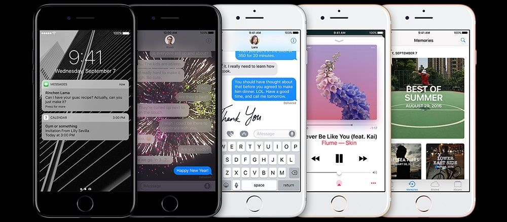
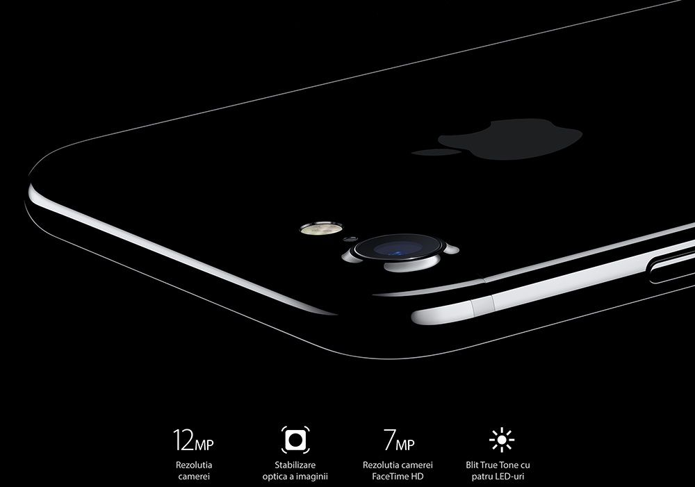
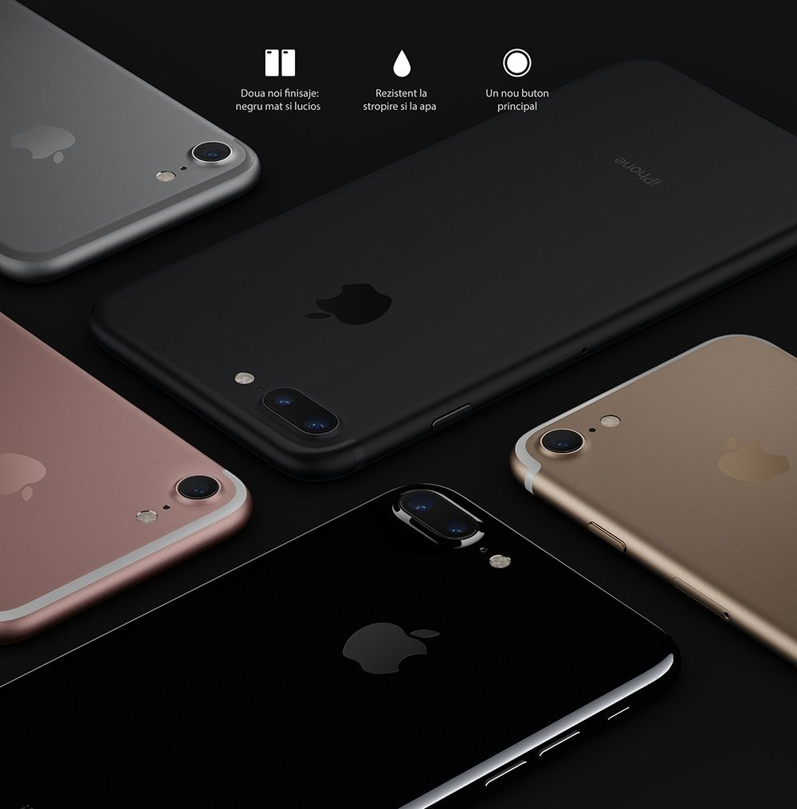

|
iPhone 7 îmbunătățește dramatic cele mai importante aspecte ale experienței iPhone. Introduce noi sisteme de camere avansate. Cea mai bună performanță și autonomie a bateriei văzute vreodată la un iPhone. Difuzoare stereo captivante. Cel mai luminos și mai colorat ecran iPhone. Rezistent la stropire și la apă.1 Și arată la fel de puternic precum este. Acesta este iPhone 7. 
iPhone 7 atinge un nou nivel de inovație și precizie. Finisajul negru diamant nu seamănă cu nimic din ce am creat până acum. Carcasa este rezistentă la stropire și la apă.1 Butonul principal este complet reconceput. Iar cu noul design unibody în care nu se simte nicio îmbinare, iPhone 7 se simte la fel de bine pe cât arată de bine. Două dimensiuni. Cinci finisaje.Cu iPhone 7 și iPhone 7 Plus, am introdus o nuanță superbă de negru cu finisaj mat și un negru diamant puternic și extrem de lucios. Atât modelele de 4,7 inchi, cât și modelele de 5,5 inchi - fabricate cu aluminiu seria 7000, incredibil de rezistent - sunt disponibile și în culorile noastre inconfundabile pe argintiu, auriu și roz auriu. 
Negru absolut.Fabricat din aluminiu sablat cu sticlă, noul nostru model negru are un finisaj puternic, extrem de intens. Finisajul negru diamant extrem de lucios a fost obținut printr-o nouă inovație de inginerie de design — un proces remarcabil de precis, în nouă pași, de anodizare și șlefuire.2 Rezultatul final este un negru atât de pur și continuu, că nu îți vei da seama unde se termină aluminiul și unde începe sticla. Cu adevărat negru. Fabricat să fie rezistent la apă.Având întreaga carcasă reproiectată, iPhone 7 este primul iPhone rezistent la apă. Așa că acum ești protejat împotriva scurgerilor, stropilor și chiar a prafului. Varietatea versiunilor de memorie. Chiar dacă iPhone 7 nu are card de memorie, apare în mai multe versiuni de memorie și reușește să acopere o gamă foarte largă: 32GB, 128GB sau 256GB. Pe de altă parte, chiar dacă alte smartphone-uri au suport de card, este cunoscut faptul că, de exemplu, nu toate aplicațiile permit salvarea și rularea pe suportul suplimentar de stocare. Cele mai noi aplicații. Platforma Apple de aplicații este preferată de majoritatea dezvoltatorilor. Aceștia spun că este mult mai bine securizată și nu există riscul de a fi piratate. De asemenea, există multe aplicații care sunt exclusiv pe smartphone-urile și tabletele iPhone. 
Procesorul rapid și grafica performantă. Mai multe teste efectuate cu aplicații independente au arătat că noul procesorul A10 de la Apple, care este pe iPhone 7 și 7 Plus, este cel mai rapid de pe un smartphone. Este un CPU cu 4 nuclee. Primele 2 nuclee sunt pentru performanță, de două ori mai puternice decât pe iPhone 6s. Celelalte 2 nuclee sunt pentru eficiență. De asemenea, grafica este de 240 de ori mai performantă decât este pe modelul anterior. |